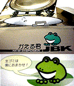
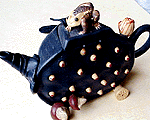
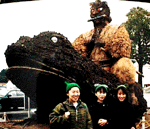

|
生ゴミが土にカエル！ 狛江の住民挙げて『かえる君』利用！
 【東京発=「かえるクラブ」のGEN & SHION同志記者】１月１５日付の東京都狛江市広報に、某マンションの管理組合が、台所から出る生ゴミを乾燥させて処理する「かえる君」を設置して、生ゴミの堆肥化に取り組んでいるという記事がありました。記事によれば、『管理組合の環境担当理事の呼びかけに応え、取り組んでいる人は５４世帯。「おはようございます。」週３回、朝９時が投入時間。集合住宅用生ゴミ処理機（50kg・７時間処理）の設置されたゴミ置き場に生ゴミの入ったポリバケツをもって集ま』るそうだ。生ゴミを投入すると、7時間後に、ふりかけの様な乾燥物になるという。 『生ゴミの乾燥物は２週間に１回集めて、埼玉県の肥料会社に運ばれ、特殊肥料につくり変えます。農家２０軒でこの肥料を使って野菜作り等の肥料として効果はどうか、実験に取り組んでもらってます。甘くてシャキッと新鮮な狛江産野菜と色鮮やかな草花で帰ってくることが期待されています』ということです。 なお、この「かえる君」を開発した会社は「自動車部品工業株式会社」というところで、「かえる君」の紹介を行っています。
「かえる君」パンフを郵送【千葉発=けろ沢けろ枝同志記者】食品関係の展示会で生ゴミ処理機の「かえる君」を発見しました。業務用でかなり大きいのですが、地球にやさしい「かえる君」です。庭がある人は使いましょう！パンフレットを郵送しました。「かえる君」のデザイン改良にも期待！【全国かえる奉賛会】けろ沢けろ枝同志記者の送ってくれたパンフレットとともに、GEN & SHIONの手厚いレポートで、「かえる君」の全貌が明らかになった。機械の内部に、生きたカエルがぎっしりと飼われていて、生ゴミを食べているのではないかと思っていたが、ページを見に行くと、素晴らしい機械らしい。さー、あなたの町でも、「かえる君」を購入して、町民総出で、生ゴミ処理当番を決めようではないかあああ。生ゴミ投入口をカエルの頭部そのもののデザインに変更すれば、カエラーが購入することは間違いないぞ！ 第２回・福岡カエル展を開催へ！【福岡発=げこげこ大王直筆】先日、福岡市の某所で、極秘カエル会議を開催し、今年も『福岡かえる展』を開催することに決めた。会期は、６月６日のカエルの日から１１日までの６日間の予定。会議では、参加者全員がカエル帽をかぶり、居酒屋に集合。店内の客のカエル帽への羨望の視線を浴びながら、福岡かえる展の成功を祈願した。写真は、気勢を挙げるカエル会議出席者。大王は、撮影しているので写っていない。←帽子かぶるのが恥ずかしかったから写らなかったのではないからねー(笑)  蓮の葉、蓮の実、取っ手にガマ急須を発見！【東京発=石居進同志カエル博士】立川にある中国茶の専門店で見つけたガマガエル急須です。本体は蓮の葉や実をデザインしてあります。【全国かえる奉賛会】いいなー、この急須で毎日お茶をいただきたいものだあ。デザイン的にも美しいので、使うのが勿体ないくらいです。  五右衛門ガマは「平成不況カエル」！【熊本発=のんたん同志記者】九州自動車道のあるサービスエリアで、何気に「ハイウェイポスト便り」ってのを手にとって見たら、例の北熊本ＳＡのカエルが紹介されていました！それによると、あのカエルの名前は「平成不況カエル」というらしく、反対斜線のゴジラは製作した下馬尾地区の名前を取って「蘇ったゲバオドン」っていうらしいです。
フィギュア選手界にカエル人気？！【神奈川発=kei-f同志記者】さて、先日からカエル少女の捜索を粛々とはじめておりますが、面白いことを発見いたしました。このページでは長野五輪の女子フィギュアスケートで金メダルをとったタラ・リピンスキー選手の優勝の記事と同時にプロフィールが載っておりました。そこの趣味の欄に「カエルのおもちゃ集め」とあるではないですか!!!これはフィギュアスケートとカエルのなにかしらの縁を感じるとともに、世界でのカエル人気をうかがわせることでした。恐るべし!!!カエル人気!!! 【全国かえる奉賛会】フィギュアスケート関係のページ運営者で、カエル少女情報を手にしている方がいたら、情報をメールくださああああああい！！ モロー君バレンタイン企画が進行中！【福岡発=モローの娘・弟子・りょうこ同志記者】第１期、２期の分譲が大好評のうちに完売したモロー君の携帯ストラップを、さらに増産しています。そろそろバレンタインデーも近いし、ぜひ彼氏にモロー君をプレゼントしましょう！！まもなく発売開始です。
けろテン市場を引き続きチェックしよう。またモロー寺井師匠作のモロー像も同時発売になるかもしれません。
投稿採用者に武功カエル徽章を授与！ |
かえる古新聞過去に取り上げた記事を見出し付きで一覧したい人は、ここをクリック◆創刊号を見る◆先週号を見る◆話題の号を見る◆かえる新聞の昔を読む
|
私も入っています。。全国かえる奉賛会
大王様に会うには、このバナーをクリック。ずっと奥に写真館があるぞ。全国かえる奉賛会に入会するには、自分のホームページのどこかに、下の部分を追加するとバナーがリンク付きで表示されるぞ。どんどん入会しましょー |


|